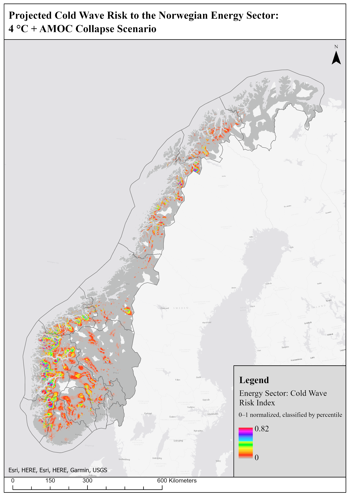

Multi-Hazard Climate Risk Assessment for Norway's Energy Sector
Klimarisiko fra flere naturfarer for energisektoren i Norge


Left: mean multi-hazard risk to the energy sector per county. Right: the continuous 1 km risk surface. Both under the 4°C + AMOC collapse scenario. Click a map to open it in full size.
Venstre: gjennomsnittlig multirisiko for energisektoren per fylke. Høyre: kontinuerlig risikoflate på 1 km. Begge under scenariet 4°C + AMOC-kollaps. Klikk på et kart for å åpne det i full størrelse.
Project Overview
Prosjektoversikt
This project assesses climate risk in Norway for three warming scenarios by 2100: 2°C (RCP 2.6), 4°C (SSP3-7.0), and an exceptional 4°C scenario with a collapse of the Atlantic Meridional Overturning Circulation (AMOC), which would bring much colder winters. The assessment covers four hazards: storm surges, extreme precipitation and flooding, cold waves, and drought. It follows the IPCC definition of risk: Risk = Hazard × Exposure × Vulnerability.
The analysis was carried out for the energy sector, which served as the pilot for the full workflow. Norway's power system depends on hydropower and a long transmission network through fjords and mountains, which exposes it to several hazards at the same time.
Prosjektet vurderer klimarisiko i Norge for tre oppvarmingsscenarier fram mot 2100: 2°C (RCP 2.6), 4°C (SSP3-7.0) og et ekstremt 4°C-scenario med kollaps i den atlantiske omveltningssirkulasjonen (AMOC), som vil gi mye kaldere vintre. Vurderingen omfatter fire farer: stormflo, ekstremnedbør og flom, kuldebølger og tørke. Den bygger på IPCCs definisjon av risiko: risiko = fare × eksponering × sårbarhet.
Analysen ble gjennomført for energisektoren, som fungerte som pilot for hele arbeidsflyten. Det norske kraftsystemet er avhengig av vannkraft og et langt kraftnett gjennom fjorder og fjell, og er derfor utsatt for flere farer samtidig.
Method
Metode
The assessment uses raster overlay in ArcGIS Pro. All layers are brought to a common 1 km grid (ETRS89 / UTM zone 33N) and rescaled to 0–1, so that hazard, exposure and vulnerability can be multiplied cell by cell. The workflow was scripted in Python (ArcPy) as eight phases, and the result of each phase can be inspected before moving on:
- Setup: project geodatabase, folder structure and processing settings.
- Administrative data: county boundaries from Kartverket, elevation and distance to the coast.
- Hazards: storm surge, extreme precipitation, cold waves and drought for each scenario, normalised to 0–1.
- Exposure: density of power plants and power lines from NVE's energy infrastructure data.
- Vulnerability: a county-level vulnerability index for the energy system.
- Risk: Hazard × Exposure × Vulnerability for each hazard and scenario.
- Aggregation: combined multi-hazard risk with equal hazard weights, summarised per county with zonal statistics.
- Maps and charts: the final risk maps in ArcGIS Pro and comparison charts in Matplotlib.
There are no standard downscaled climate projections for an AMOC collapse, so this scenario was built from the 4°C hazard layers as a stress test: the cold-wave hazard was increased, most strongly near the coast, storm surge and drought were amplified, and extreme precipitation was reduced.
Vurderingen bruker overlagsanalyse av raster i ArcGIS Pro. Alle lag er overført til et felles rutenett på 1 km (ETRS89 / UTM sone 33N) og skalert til 0–1, slik at fare, eksponering og sårbarhet kan multipliseres celle for celle. Arbeidsflyten ble skrevet i Python (ArcPy) i åtte faser, og resultatet av hver fase kan kontrolleres før neste steg:
- Oppsett: geodatabase, mappestruktur og prosesseringsinnstillinger.
- Administrative data: fylkesgrenser fra Kartverket, høydedata og avstand til kysten.
- Farer: stormflo, ekstremnedbør, kuldebølger og tørke for hvert scenario, normalisert til 0–1.
- Eksponering: tetthet av kraftverk og kraftledninger fra NVEs data om energiinfrastruktur.
- Sårbarhet: en sårbarhetsindeks for energisystemet på fylkesnivå.
- Risiko: fare × eksponering × sårbarhet for hver fare og hvert scenario.
- Aggregering: samlet multirisiko med like vekter for farene, oppsummert per fylke med sonestatistikk.
- Kart og diagrammer: endelige risikokart i ArcGIS Pro og sammenligningsdiagrammer i Matplotlib.
Det finnes ingen standard nedskalerte klimaframskrivninger for en AMOC-kollaps. Scenariet ble derfor laget som en stresstest ut fra 4°C-lagene: faren for kuldebølger ble økt, mest langs kysten, stormflo og tørke ble forsterket, og ekstremnedbøren ble redusert.
Results
Resultater

Mean multi-hazard risk index for the energy sector per county in the three scenarios (equal hazard weights).
Gjennomsnittlig multirisikoindeks for energisektoren per fylke i de tre scenariene (like vekter for farene).
The ranking of the counties is stable across the scenarios: Vestland and Rogaland have the highest risk in all three. The difference between 2°C and 4°C is small, and in most counties the 4°C values are slightly lower. The AMOC collapse is what changes the picture: it gives the highest risk in most counties, and Vestland's mean index rises from about 0.013 to 0.017. The maps show this 4°C + AMOC scenario.
Rangeringen av fylkene er stabil på tvers av scenariene: Vestland og Rogaland har høyest risiko i alle tre. Forskjellen mellom 2°C og 4°C er liten, og i de fleste fylker er verdiene for 4°C litt lavere. Det er AMOC-kollapsen som endrer bildet: den gir høyest risiko i de fleste fylker, og gjennomsnittsindeksen for Vestland øker fra omkring 0,013 til 0,017. Kartene viser dette 4°C + AMOC-scenariet.

County ranking under the 4°C + AMOC collapse scenario: mean risk and 90th percentile.
Rangering av fylkene under scenariet 4°C + AMOC-kollaps: gjennomsnittlig risiko og 90-persentil.
Under 4°C + AMOC, Vestland (mean 0.017) and Rogaland (0.014) form the highest risk class, followed by Buskerud, Møre og Romsdal and Telemark. Finnmark has the lowest risk. The index values are small on average because risk is close to zero wherever there is little energy infrastructure. The 90th percentile, which reaches about 0.05 in Vestland, shows how concentrated the hotspots are.
The 1 km risk surface shows where within the counties the risk is concentrated: the highest values lie in the fjord and mountain areas of Vestland and Rogaland, with smaller hotspots in Møre og Romsdal, around Trondheim, and in Nordland and Troms.
Under 4°C + AMOC utgjør Vestland (gjennomsnitt 0,017) og Rogaland (0,014) den høyeste risikoklassen, fulgt av Buskerud, Møre og Romsdal og Telemark. Finnmark har lavest risiko. Indeksverdiene er i gjennomsnitt små fordi risikoen er nær null der det er lite energiinfrastruktur. 90-persentilen, som når omkring 0,05 i Vestland, viser hvor konsentrert risikoen er.
Risikoflaten på 1 km viser hvor i fylkene risikoen er konsentrert: de høyeste verdiene ligger i fjord- og fjellområdene i Vestland og Rogaland, med mindre konsentrasjoner i Møre og Romsdal, rundt Trondheim og i Nordland og Troms.

Cold-wave risk to the energy sector under the 4°C + AMOC collapse scenario (0–0.82).
Risiko for kuldebølger for energisektoren under scenariet 4°C + AMOC-kollaps (0–0,82).
Cold waves are the hazard most directly linked to an AMOC collapse. The highest cold-wave risk is in the western fjord and mountain areas, where much of Norway's hydropower production and many power lines are located, and in parts of Nordland.
Kuldebølger er faren som henger tettest sammen med en AMOC-kollaps. Den høyeste risikoen for kuldebølger finnes i fjord- og fjellområdene på Vestlandet, der mye av vannkraftproduksjonen og mange kraftledninger ligger, og i deler av Nordland.
Reducing the Risk
Hvordan redusere risikoen
The results point to four priorities for grid operators (Statnett and the regional grid companies) and spatial planners:
- Start with Vestland and Rogaland when strengthening power lines against wind and ice loads.
- Protect transformer substations in flood and storm-surge zones, for example with raised foundations and flood barriers.
- Prepare the power system for severe cold: winter reserve capacity, de-icing of key lines and emergency plans for peak demand.
- Manage reservoirs for both floods and drought: keep buffer capacity in wet periods and water in reserve for dry summers.
Resultatene peker på fire prioriteringer for nettselskapene (Statnett og de regionale nettselskapene) og arealplanleggere:
- Begynn med Vestland og Rogaland når kraftledninger skal forsterkes mot vind- og islast.
- Beskytt transformatorstasjoner i flom- og stormflosoner, for eksempel med hevede fundamenter og flomvern.
- Forbered kraftsystemet på streng kulde: reservekapasitet om vinteren, avising av viktige linjer og beredskapsplaner for effekttopper.
- Styr vannmagasinene med tanke på både flom og tørke: behold bufferkapasitet i våte perioder og vannreserver for tørre somre.
Tools Used
Verktøy brukt
ArcGIS Pro, Python (ArcPy), Spatial Analyst, Matplotlib
Project Date
Prosjektdato
2026
Project Type
Prosjekttype
GIS & Climate Risk Analysis
GIS- og klimarisikoanalyse